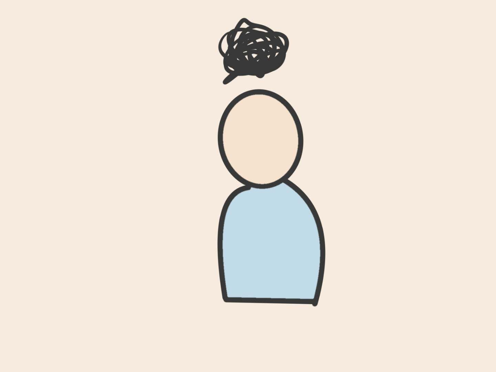

On the bed, I just can't relax.
I keep on thinking more and more.
Each thought just appears randomly, and they never disappear.
For days with unfinished work, I keep on thinking what should I do and what would happen the next day.
I kept on thinking about what would happen if I started on the assignments earlier, and then I started worrying about my future.
I'm too bad at planning...
Will I always be like this in the future? That's horrible...
For days with finished work, I still find myself hard to be fully relaxed.
I just feel myself preoccupied with so many things.
What should I do after finishing bachelor's degree?
Should I apply for a master's program? Or look for a job?
Whenever a new thought forms, it just remains inside my mind, and it won't disappear.
I feel overwhelmed with these thoughts.
I don't know what to do next.
With these accumulating thoughts, I eventually fall alseep...the day finally ends.
Even with my unwillingness, a new day starts.